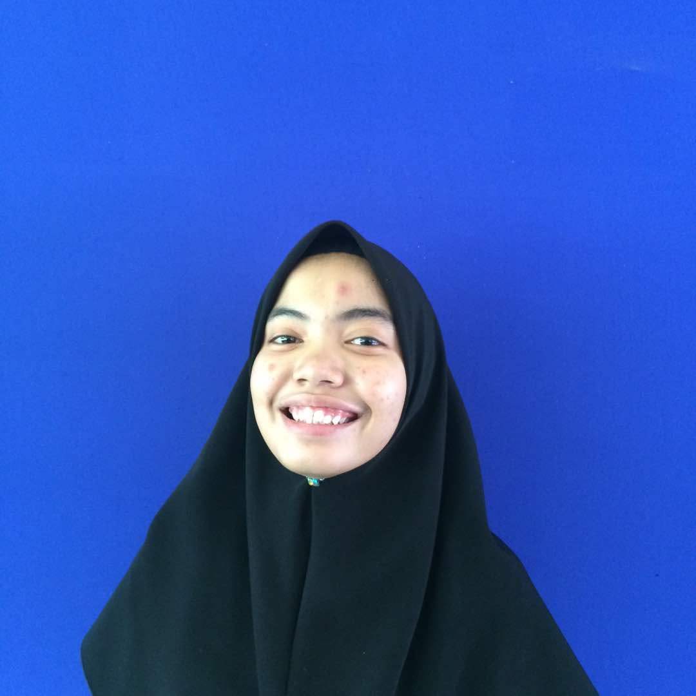

NURUL NIESHA BINTI NORFAEZAR

Graduated in diploma of Computer System and Network from Port Dickson Vocational College.
Made the Dean's List for two consecutive years (2017-2019). Seeking a position that will allow me to use my practical experience,
strong interpersonal skills as well as my eagerness to contribute to a quality company. Moreover, I would like
to work in a professional and active environment where I can apply what I was taught in College to progress and develop within my job.
I believe my fast learning abilities, commitment to succeed
and relevant studies make me perfect for this job.